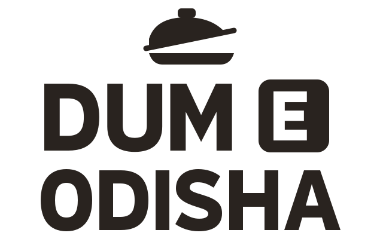
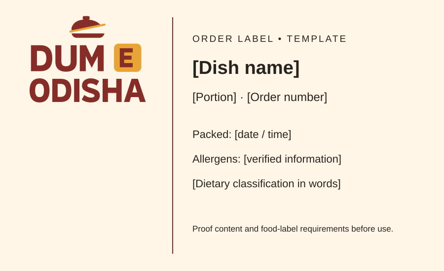
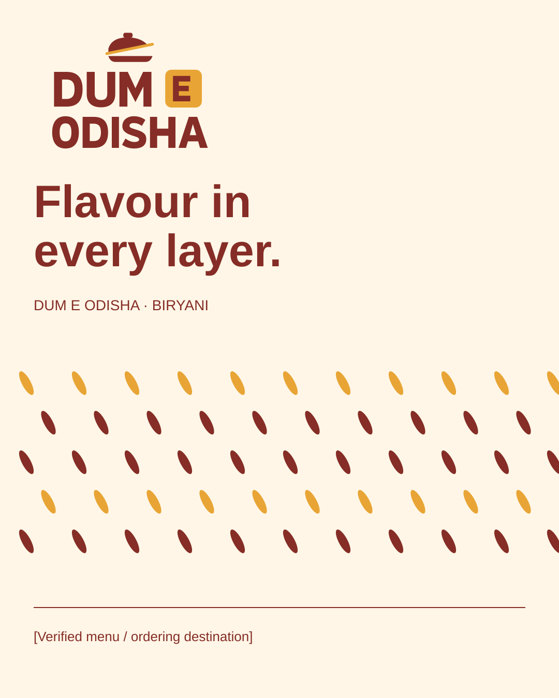

Primary
For cream and light fields.
Editable SVGOriginal AI-generated editorial illustration. Not a photograph of a menu item.
01 / continuity, made usable
The name, chilli-and-saffron warmth, separate E, and lifted lid come from the existing project. New custom vector lettering makes this a usable identity candidate. Original artwork and all thirteen explorations remain recoverable.
02 / a coherent logo family
For cream and light fields.
Editable SVG
One ink, transparent counter.
Editable SVG
For the chilli brand field.
Editable SVGView small-size proof sheet · Compare type-only study · View previous serif raster
03 / color with a job to do
04 / practical applications

Keep operational information separate from the brand. Populate every field with verified content.
Download label SVG
A text-editable social composition. The destination remains a visible placeholder until confirmed.
Download social SVG05 / evidence and use